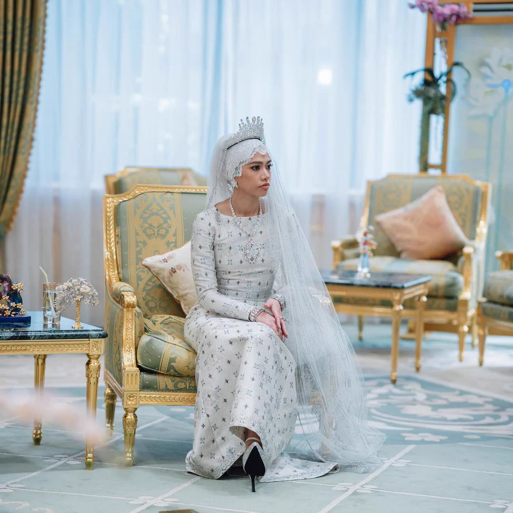
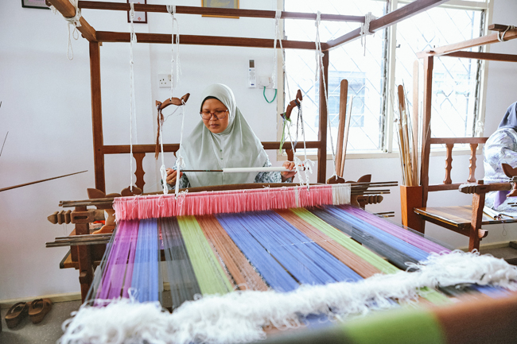
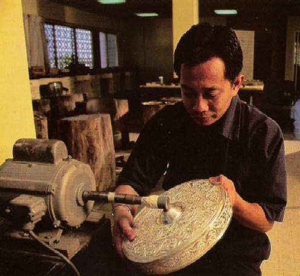
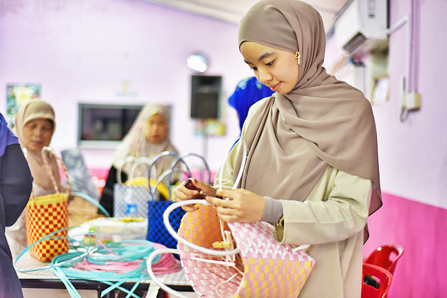

Baju Melayu
Traditional attire are commonly worn by men.
DISCOVER BRUNEI
Discover the traditions, clothing and craftsmanship that reflect Brunei's rich cultural identity.
Explore Our Heritage
01 - TRADITIONAL ATTIRE
Traditional clothing represents an important part of Brunei's cultural identity. Baju Cara melayu and Baju Kurung are commonly worn during formal events and celebrations, often complemented by songket.
Traditional attire are commonly worn by men.
Traditional attire that is commonly worn by women.
Decorative women fabric with intricate patterns.
02 - LOCAL CRAFTMANSHIP
Brunei's traditional arts and handicrafts showcase the creativity and skills of the local bruneian artisans. These crafts help preserve traditional knowledge and cultural heritage.

Intricate patterns and detailed weaving create a distinctive traditional textiles.

Decorative silver objects reflect the skill of traditional metal craftmanship.

Handwoven items demonstrates the practical skills passed down by generations.
THE BEAUTY OF BRUNEI
Discover the traditions, craftmanships and the cultural identity what makes Brunei stand out and special.
Discover More of Brunei